Gare de Mons · Quai 2 · 4 h 47

Un cheminot en 3x8, une clé à tire-fond, une cafetière de 1987 et des collègues à la radio contre une armée de consultants qui veulent libéraliser et privatiser le rail !
Bande-annonce
Le Shift, en une minute
Le jeu
Le 7 h 12 est supprimé. Motif : « Optimisation ».
Le consortium Privatix Rail Solutions (« Le rail, en mieux. Pour vous. Pour nous surtout. ») et son cabinet de conseil, Synergia Partners, veulent libéraliser et privatiser le rail : ouvrir le réseau « à la concurrence », le découper en lots et les céder un par un. Les trois candidats de l'appel d'offres sont trois filiales du même groupe.
Mons est le lot n° 1, la gare pilote de « Mons 2032 » : si elle tombe, tout le réseau suit. Le Contrat-cadre de libéralisation doit être signé « à la fin du service », au dernier étage du BAG.
Léon, ou Léa, agent·e polyvalent·e en 3x8 depuis neuf ans, prend la clé à tire-fond de son grand-père et remonte la gare à contre-courant : les Quais & Voies, la Passerelle que les navetteurs appellent « le Calatrava », puis le Hall & BAG, jusqu'au bureau où Jean-Cul Lurcke tient le stylo.
Chaque tentative est un Shift. Quand le héros tombe, les collègues le ramènent à l'OCC. Et la signature est reportée, encore et encore : le Sondage de Privatix n'arrive jamais à réunir tout le monde, pas même ses trois « concurrents ».
Gameplay
Chaque coup se sent
Un combat nerveux et lisible : tout ce qui blesse est magenta et télégraphié. Pas de mort injuste, seulement des réunions qu'on n'aurait pas dû accepter.
-
Clic · J
Combo à la clé à tire-fond
Trois coups, hitstop, étincelles et recul qui plaque les consultants contre les quais. Le troisième coup se reconnaît les yeux fermés.
-
Espace · 2 charges
Dash « Retard SNCB »
Une esquive à deux charges qui traverse les attaques. Parfait au dernier moment, il ralentit le temps : vous n'êtes pas en retard, vous êtes en avance sur le prochain.
-
Clic droit · F
Coup de sifflet
La jauge de Mobilisation se remplit au combat. Un coup bref repousse et étourdit ; maintenu, c'est le Préavis de grève, et toute la salle s'arrête.
-
R · Gobelets
Le Café
Deux Gobelets au départ, quatre au plus. Boire soigne l'Énergie… et fait monter le Burnout. Le café de la Vieille Dame n'a jamais été détartré, c'est ce qui fait son goût.
-
Jauge 0 à 100
Le Burnout : plus fort, plus fragile
Encaisser, dasher et boire du café le font monter. Il augmente vos dégâts et ceux que vous recevez ; l'horloge du 3x8 l'empêche de redescendre sous un plancher. À 100, c'est le Pétage de plombs. Rester frais ou jouer au bord ?
-
6 emplacements · 5 raretés
Un butin qui se voit sur le héros
Outil, Casque, Gilet, Gants, Chaussures, Insigne : chaque pièce ramassée change la silhouette du héros. Le butin tombe des sacoches, caisses et colis, jamais d'un voyageur.
- Réforme
- Réglementaire
- Homologué
- Hors-série
- Patrimoine
-
Roguelite
Des Shifts en 3x8
Chaque run est un Shift, au roulement imposé : Matin, Après-midi ou Nuit, comme dans la vraie vie. L'horloge avance de 30 minutes par salle. Les collègues envoient des Avantages acquis par radio pendant le run ; après un échec, on rentre à l'OCC dépenser ses Points de Syndicalisme au Tableau des revendications. Mourir n'est jamais une perte sèche.
- Quais & Voies
- Passerelle « Calatrava »
- Hall & BAG
- Bureau de Lurcke

Le héros et son équipement
La dotation, rangée par Josiane
Léon, ou Léa, part au Shift avec la clé à tire-fond de son grand-père. Le reste se gagne sur le terrain : le butin tombe des sacoches, caisses et colis abandonnés par Privatix, jamais d'un voyageur. Chaque pièce ramassée change la silhouette du héros, du casque au gilet.
Au retour, Josiane range ce qui vaut la peine dans son casier, prépare le Paquetage du prochain Shift et réforme le reste en Ferraille, « parce qu'on ne jette rien, on réforme ».
- Outil
- Casque
- Gilet
- Gants
- Chaussures
- Insigne
Cinq raretés, de la Réforme au Patrimoine
-

Réforme
Rayé, encore utile. « Réformé, pas fini. »
-

Réglementaire
La dotation telle que le règlement la prévoit. Rare depuis le PHR-2032.
-

Homologué
Testé et tamponné « HOMOLOGUÉ ». Béné respecte ce tampon.
-

Hors-série
Prototype ou commande unique ; les coutures brillent.
-

Patrimoine
Un objet qui a une histoire, et parfois un ancien propriétaire.
Galerie
Captures du jeu
Images réelles, prises en jeu.
-

Jeu Lire, esquiver, punir : le magenta annonce chaque attaque.
-

Jeu Mêlée sur les voies, quai de Mons.
-

Jeu Le coup 3 : hitstop, éclair, consultants en réunion.
-

Mini-boss Le Discosaure entre en piste.
-

Mini-boss Piétinement en rythme : le tempo est le télégraphe.
-

Butin Le butin au sol et sa carte d'objet.


Ouvrir l'artbookModel sheets, décors, VFX, animations et press kit
Bestiaire
Les ressources de Privatix
Des gens payés pour ne pas savoir et des machines achetées pour ne pas répondre, chargés de préparer le lot n° 1 avant la signature. Ils ne meurent pas : ils « partent en réunion », se mettent en mute ou affichent HORS SERVICE. Tout ce qui blesse est magenta.
Le terrain
Les ennemis communs, envoyés en nombre sur les quais.
-

Consultant Junior « Slide-Ninja »
24 ans, première mission chez Synergia Partners : découper en « lots rentables » un réseau découvert lundi. Il chasse en meute, fonce en « Quick win » et laisse une traînée de slides. Projeté sur une voie, il « part en réunion ».
« C'est un quick win, ça ! »
-

Borne Automatique
Phase 1 du plan : elle a remplacé le guichet de Béné et n'a jamais accepté le bon moyen de paiement. Elle se déplie d'une trappe au sol et tire des tickets ; son dos est vulnérable.
« Veuillez insérer votre dignité. »
-

Drone Optimètre
Il mesure la « performance » de chaque quai avant sa mise en lot, sourire des agents compris, et marque le héros pour toute la salle. Il perd sa cible dans les ombres des arcs.
« Souriez, vous êtes filmé pour la qualité. »
Les cadres
Les élites : plus solides, plus rares, et toujours sûrs d'avoir raison.
-

Manager KPI « Le Tableur »
Le train avait douze minutes de retard, mais l'indicateur est vert. Il a chronométré les pauses pipi au centième et rêve d'un indicateur qui mesure les indicateurs. En Réunion d'alignement, il protège ses troupes ; frappé à ce moment, il perd tous ses boucliers.
« Vous êtes à 63 % de l'objectif. De vie. »
-

Le Furet putride
Le ramassage des déchets du BAG a été externalisé ; pour « optimiser le tri à coût zéro », un consultant a eu une idée : un furet. Il a grandi. Beaucoup. Nuages d'odeur, roulades dans les sacs bleus, et il vole vos Gobelets.
« Tri en cours. Veuillez patienter. »
-

Le Fluidifieur
Il ne déteste personne : il fluidifie. Régisseur de l'inauguration de « Mons 2032 », il glisse sur sa chaise à roulettes portée par le vent et a rayé le personnel de la gare du plan de table. Il n'a jamais lu l'alinéa 3.
« Ce n'est pas un changement, c'est une opportunité de changement. »
Les têtes d'affiche
Un mini-boss et les boss qui gardent les biomes. On ne les tue pas : on les fait renoncer.
-

Le Discosaure
Senior Partner fondateur de Synergia Partners. Il vend le même plan de restructuration depuis la soirée de lancement du cabinet, boule à facettes comprise, et n'a fait que changer le logo de la couverture. Ce n'est pas lui qui est fossile, c'est sa méthode.
« Restructurez avec moi ! Un, deux, un, deux ! »
-

L'Auditeur des Quais
Promu pour avoir prouvé, tableaux à l'appui, que les quais seraient « 38 % plus ponctuels sans trains ». Il pilote la Borne Totale 3000 et commande les rames depuis sa tablette. Son chronomètre tourne depuis son entrée en fonction ; il s'arrêtera sur 7:12.
« Soupir non conforme. Audit bienveillant : début. »
-

Elio Di Rupo, « l'Invité d'honneur »
Il ne travaille pas pour Privatix : il a répondu « disponible » au Sondage pour couper le ruban de « Mons 2032 », la première gare ouverte à la concurrence, sans lire plus loin que le titre. Il défend son temps de parole, pas le contrat. On ne le bat pas : on obtient la parole.
« Je serai bref. » (Il ne l'est pas.)
Caricature bon enfant d'une personnalité réelle, autorisée par le porteur du projet. Toutes ses répliques sont inventées pour le jeu.
-

Jean-Cul Lurcke
Directeur de la Transformation et de l'Excellence Opérationnelle. Au 3e étage du BAG, c'est lui qui tient le stylo du Contrat-cadre de libéralisation : Mons doit être le premier lot « ouvert au marché ». Il n'a jamais pris le train et il a peur du silence : alors il parle, tout le temps.
« Je lance la présentation. Quatre cent douze slides. Il n'y a pas de pause prévue. »
Au dernier étage du BAG, Jean-Cul Lurcke tient le stylo. Une seule question peut le laisser sans voix ; à vous de la poser au bon moment.
Le hub
L'OCC, « Operation Coffee Center »
Au rez-de-chaussée arrière du BAG, le Centre Opérationnel de la gare tourne jour et nuit devant un mur d'écrans et une rangée de pupitres. Privatix a pris les étages un par un, « en phase de transition », mais ne peut pas fermer celui-ci : sans centre opérationnel, plus aucun train ne roule, et un réseau à l'arrêt se vend mal.
Hiver 1987 : la direction remplace la cafetière collective par un distributeur payant. Le soir même, Marcel et une poignée d'accompagnateurs la portent jusqu'à l'OCC. À 22 h 47, elle sert son premier café. On l'appelle la Vieille Dame. Elle siffle avant chaque événement important.
Entre deux Shifts, on y dépense ses Points de Syndicalisme, on règle son Paquetage au Vestiaire de Josiane et on écoute les collègues. Chaque retour apporte au moins une ressource gardée et une réplique nouvelle.
Les pupitres
- PACOBus de remplacement, correspondancesBéné
- RTSRégulation et matériel roulantYasmina, Kevin
- TLI & AITAnnonces en gareRudy
- RCCAVoyageurs à mobilité réduiteFatou
- Permanence conduiteGestion des conducteursMarcel
- DPDAccompagnateurs de trainJosiane
7e commandement : « Tu ne laisseras aucun collègue sur le quai. »
Quelques collègues
-

DPD · accompagnatrice de train
Josiane Delhaye
28 ans de maison. Elle tient les casiers et le Vestiaire de la Cour intérieure, prépare le Paquetage et a déjà expulsé un sanglier d'un train « avec politesse ».
« Ça, c'est pas dans le règlement, mais c'est dans le cœur. »
-

PACO · guichetière
Bénédicte « Béné » Wautier
Son guichet a fermé, elle l'a emporté. Elle relance vos affixes, archive les Preuves et garde Le Règlement, le vieux classeur du statut, sous le bras.
« Numéro suivant ! »
-

RTS · technicien de l'Infra
Kevin « Kéké » Lambot
Technicien caténaires de l'autre maison, détaché au matériel roulant. Gentil comme un pain, il parle à ses outils et a écrit un rapport de trois pages que personne n'avait lu.
« C'est pas nous, c'est l'autre boîte. »
Télécharger
Privatix sur votre ordinateur
La même version que dans le navigateur, emballée dans une application de bureau qui tire le meilleur de votre carte graphique. Gratuite, pour Windows, macOS et Linux.
Dernière version publiée sur GitHub.
Toutes les versions sur GitHub
Versions précédentes
Les applications ne sont pas signées : un certificat de signature coûte cher, et Privatix est gratuit. Votre système va donc se méfier au premier lancement. C'est normal, et vous pouvez vérifier que le fichier vient bien de la page GitHub du projet.
Windows (SmartScreen) : « Windows a protégé votre ordinateur » → Informations complémentaires → Exécuter quand même.
macOS (Gatekeeper) : « Privatix ne peut pas être ouvert » → clic droit (ou Ctrl-clic) sur l'application → Ouvrir, puis confirmer. Sur macOS 15 et suivants : Réglages Système → Confidentialité et sécurité → Ouvrir quand même.
Linux : rendez l'AppImage exécutable (chmod +x Privatix-*.AppImage, ou Propriétés → Autoriser l'exécution), puis lancez-la.
Configuration
Ce qu'il faut pour prendre son poste
Navigateur
WebGL 2 obligatoire
- Chrome, Edge, Firefox ou Safari récents.
- Une carte graphique de moins de dix ans, intégrée suffit.
- Mobile en paysage : Android milieu de gamme, iPhone récent.
- Clavier et souris, manette ou écran tactile.
Qualité
Bas, Moyen, Haut
- Choisie automatiquement au démarrage (Moyen sur écran tactile).
- Forcée par l'adresse :
?q=bas,?q=moyenou?q=haut. - F3 affiche les mesures (images par seconde, appels de dessin).
Accessibilité
Réduction des mouvements
- Suit le réglage de votre système (prefers-reduced-motion).
- Bascule en jeu : M, ou
?rm=1. - Secousses réduites, plus aucun clignotement : la boule du Discosaure arrête de stroboscoper.
- Les télégraphes restent lisibles par leurs contours et leurs remplissages.
FAQ
Questions fréquentes
De quoi parle le jeu ?
Une armée de consultants veut libéraliser et privatiser le rail : ouvrir le réseau à la concurrence, le découper en lots et le céder morceau par morceau, en commençant par la gare de Mons. Un cheminot en 3x8 et ses collègues de l'OCC remontent la gare, Shift après Shift, pour empêcher la signature et rendre le plan public.
Le jeu est-il gratuit ?
Oui, dans le navigateur comme en application de bureau. Pas de publicité, pas d'achat intégré : Privatix n'a rien à vous vendre, contrairement à Privatix Rail Solutions, qui voudrait vous vendre le rail par lots.
Navigateur ou application de bureau ?
C'est le même jeu. L'application embarque son propre moteur de rendu et peut forcer la carte graphique dédiée : utile sur un portable ou si votre navigateur bride WebGL. Le navigateur, lui, se met à jour tout seul.
Ma progression est-elle sauvegardée ?
Oui, sur votre appareil (stockage local du navigateur ou de l'application). Vider les données du site efface la sauvegarde.
Le jeu se moque-t-il des cheminots ou des voyageurs ?
Jamais. La satire vise une politique, la libéralisation et la privatisation du rail, et des consultants fictifs ; aucun parti politique n'y figure. Les cheminots sont drôles parce qu'ils sont lucides ; les voyageurs ont toujours raison d'être fatigués. La SNCB est le service public que l'on défend.
Mon antivirus ou mon système bloque l'application.
Les applications ne sont pas signées : voyez l'encart de la section Télécharger pour ouvrir le fichier sur Windows, macOS et Linux. En cas de doute, jouez dans le navigateur.